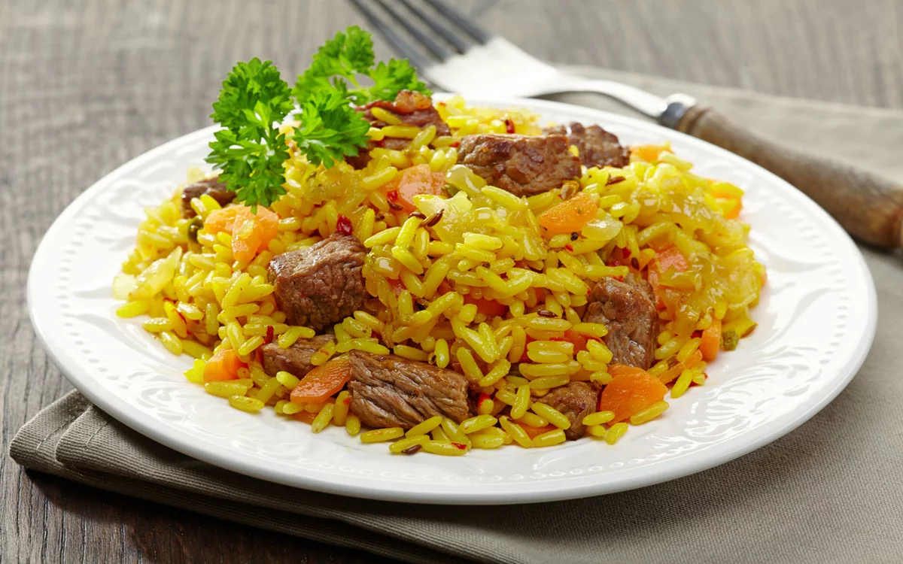

Плов узбекский
Для приготовления узбекского плова нам потребуется:
- Мясо (баранина) — 0,5 кг.
- Масло растительное (оптимальный вариант — хлопковое, но на подсолнечном тоже очень вкусно) — 0,5 стакана.
- Рис — 2 полных стакана, сорт девзира или лазер.
- Лук репчатый — 2-3 шт.
- Морковь — 4-5 шт.
- Соль, барбарис, изюм — по вкусу.
Нарезанные и промытые мясные куски помещаем в казан и обжариваем на среднем огне с двух сторон. Пока жарится баранина мы нарезаем полукольцами лук, добавляем его к мясу и продолжаем жарку .
Чтобы мясо и лук не пригорели нужно периодически их перемешивать.
До начала готовки шинкуем морковку соломкой. Как только лук приобрел золотистый цвет, кладем в казан нарезанную морковь и заливаем кипятком. Солим и всыпаем приправы либо очищенные и промытые барбарис, зиру. Прикрываем крышкой и на слабом огне тушим .
Пока готовится основа мы перебираем и промываем рис несколько раз до прозрачности сливаемой воды.
Как только морковка сварится, загружаем рис, разравниваем поверхность шумовкой и, при необходимости, доливаем кипяток.
Запомните, что избыточное количество воды превратит узбекский плов в банальную рисовую кашу. Поэтому жидкости должно быть ровно столько, чтобы закрыть собою рис на 4-5 мм.
Увеличиваете температуру до высокой и варите палов. Так его называют в некоторых регионах страны. Как только рис впитает в себя воду, надо шумовкой перевернуть верхний слой, отделить рис от стенок казана и ложкой сделать глубокие проколы, чтобы испарилась оставшаяся влага.
Потом убавляем газ (электроплиту) до минимума, закрываем крышку плотно и даем потушиться . После выключения плиты крышку не снимаем еще , чтобы дать яству наполниться ароматом приправ.
Приятного аппетита!
